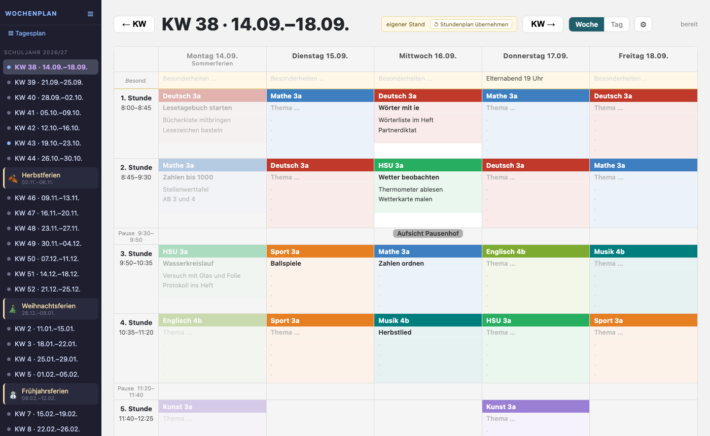
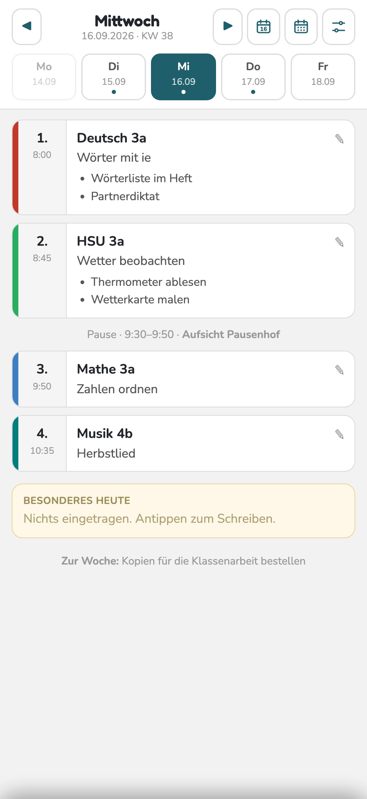
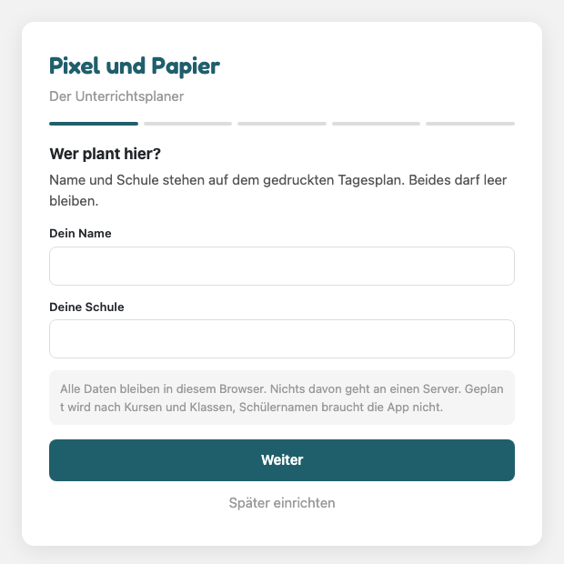
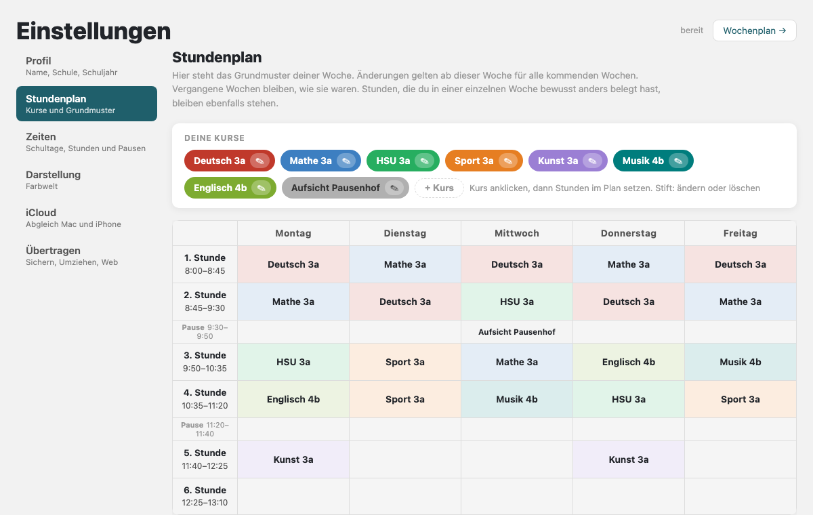
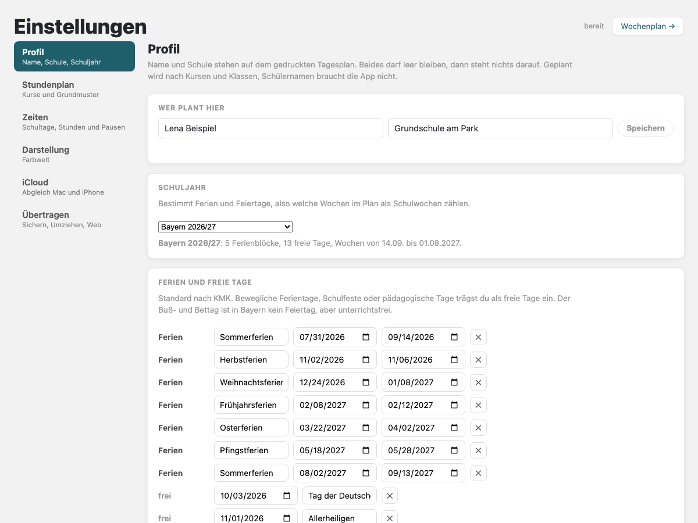
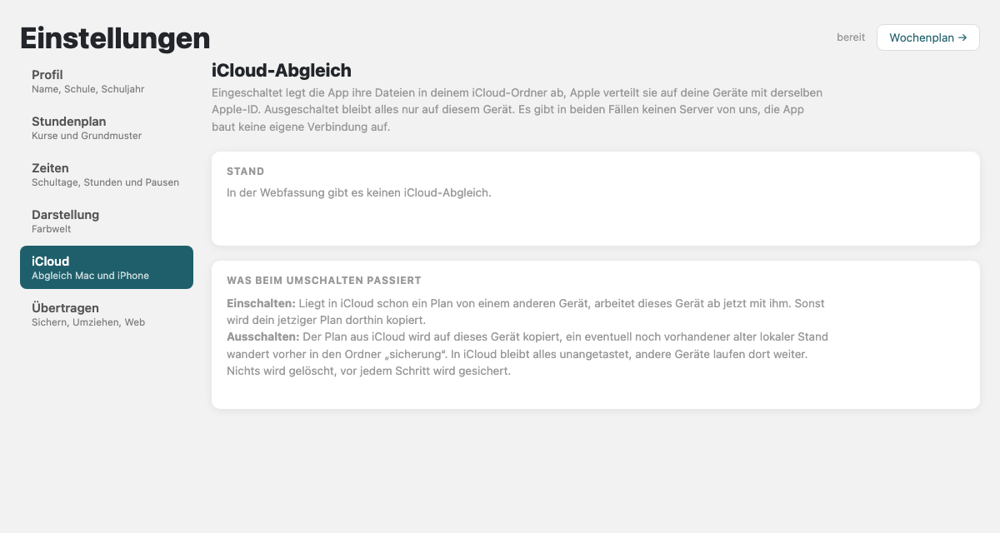

Die Woche planen, der Tag auf einen Blick
Pixel und Papier ist der Wochenplaner für Lehrkräfte. Der Stundenplan ist die Vorlage, jede Woche bekommt Thema und Notizen je Stunde, der Tagesplan kommt als A4-Blatt aus dem Drucker. Ohne Konto, ohne Server: Die Planung bleibt auf dem Gerät oder in der eigenen iCloud.
So ist die App gedacht: Geplant wird die Woche am Mac oder am iPad, dort mit dem vollen Wochenplan, Stundenplan und Kursverwaltung. Das iPhone zeigt den Tag mit Stunden, Themen und Notizen und nimmt kurze Nachträge auf. Alle Geräte gleichen sich über die eigene iCloud ab.


Wochenplan am Mac und der Tag am iPhone, mit erfundenen Beispieldaten.
Die ersten Schritte
Fünf Schritte vom ersten Start bis zur geplanten Woche. Die Bilder stammen aus Probeläufen mit erfundenen Daten.
Einrichten
Beim ersten Start fragt die App nacheinander nach Name und Schule, Bundesland und Schuljahr, den Schultagen von Montag bis Sonntag, den Unterrichtszeiten und den ersten Kursen. Jede Angabe lässt sich später in den Einstellungen ändern. Name und Schule dürfen leer bleiben, sie stehen nur auf dem gedruckten Tagesplan.

Kurse und Stundenplan
Ein Kurs ist ein Fach mit Klasse und Farbe, etwa Deutsch 3a. Unter Einstellungen, Stundenplan wird ein Kurs oben angeklickt und dann in die Stunden gesetzt. Pausen lassen sich ebenfalls belegen, zum Beispiel mit einer Aufsicht. Der Stundenplan ist die Vorlage für alle kommenden Wochen, vergangene Wochen bleiben wie sie waren.

Eine Woche planen
Im Wochenplan steht links die Liste der Kalenderwochen mit den Ferien. In jeder Stunde gibt es ein Feld für das Thema und eines für Notizen, gespeichert wird beim Tippen. Eine Stunde lässt sich verschieben, tauschen oder über die Wochengrenze mitnehmen. Fällt eine Stunde aus, rutscht der Stoff auf die nächste desselben Kurses.
Ferien anpassen
Ferien und Feiertage kommen mit dem Bundesland, nach den Terminen der Kultusministerkonferenz für 2026/27 und 2027/28. Bewegliche Ferientage, pädagogische Tage oder ein Schulfest werden unter Einstellungen, Profil als freie Tage eingetragen. „Standard wiederherstellen“ holt die Termine der KMK zurück.

iCloud an oder aus
Mit eingeschaltetem Abgleich legt die App ihre Dateien im eigenen iCloud-Ordner ab, Apple verteilt sie auf die Geräte mit derselben Apple-ID. Ausgeschaltet bleibt alles nur auf einem Gerät. Der Schalter steht unter Einstellungen, iCloud. Beim Ausschalten wird der Plan auf das Gerät kopiert, in iCloud bleibt alles stehen, nichts wird gelöscht.

Datenschutzerklärung
Für die App „Pixel und Papier“ auf Mac und iPhone.
Verantwortlich
Thomas Hermann
Stefanstraße 6
86573 Obergriesbach
Kurz gesagt
Die App „Pixel und Papier“ erhebt und übermittelt keine Daten an den Anbieter. Es gibt keinen Server des Anbieters, kein Benutzerkonto und keine Analyse- oder Werbedienste. Die Planung liegt als Dateien auf dem Gerät. Wer den iCloud-Abgleich einschaltet, was bei der Nutzung von Mac und iPhone zusammen der übliche Weg ist, legt diese Dateien zusätzlich in seinem eigenen iCloud-Konto bei Apple ab. Die App selbst baut keine Verbindung ins Internet auf, die Übertragung in iCloud übernimmt das Betriebssystem.
Welche Daten in der App entstehen
Die App speichert, was in ihr eingegeben wird: Name und Schule (freiwillig), Stundenplan, Kurse mit Fach und Klasse, Unterrichtszeiten, Wochen- und Tagesplanung mit Themen und Notizen, das gewählte Bundesland und Schuljahr sowie eigene Ferien- und Freitage.
Schülerdaten
Die App ist auf Planung ohne Schülerdaten ausgelegt. Sie braucht keine Namen oder anderen Daten von Schülerinnen und Schülern. Geplant wird nach Kursen und Klassen, die Felder für Themen und Notizen sind für den Unterrichtsstoff gedacht. Die App weist beim Einrichten darauf hin. Wer dennoch personenbezogene Angaben in Notizen einträgt, tut das in eigener Verantwortung und nach den Vorgaben seines Dienstherrn. Diese Daten verlassen das Gerät beziehungsweise die eigene iCloud nicht.
Wo die Daten liegen
Alle Daten werden als Dateien im geschützten Bereich der App auf dem Gerät gespeichert. Die App kann diese Dateien auf Wunsch in eine einzelne Datei herausgeben und eine solche Datei wieder einlesen. Was mit dieser Datei geschieht, entscheidet die Nutzerin oder der Nutzer.
iCloud (optional, abschaltbar)
Auf Wunsch legt die App ihre Dateien im iCloud-Bereich der App ab. Dann werden sie von Apple über das Apple-Konto der Nutzerin oder des Nutzers zwischen den eigenen Geräten synchronisiert. Dabei gelten die Datenschutzbestimmungen von Apple. Der Anbieter der App hat keinen Zugriff auf diese Daten. Der Abgleich ist nicht Voraussetzung für die Nutzung: Er lässt sich in den Einstellungen der App jederzeit ausschalten, die Daten werden dann auf das Gerät kopiert und bleiben nur dort. Ohne Abgleich verlässt keine Datei das Gerät.
Berechtigungen
Die App nutzt die Dateiauswahl des Systems, wenn eine Datei herausgegeben oder eingelesen wird und die Druckfunktion des Systems für den Tagesplan. Weitere Berechtigungen, etwa Kamera, Standort, Kontakte oder Mitteilungen, werden nicht verwendet.
Keine Weitergabe, kein Tracking
Löschen
Mit dem Löschen der App werden alle in der App gespeicherten Daten vom Gerät entfernt. Daten im iCloud-Bereich der App lassen sich in den iCloud-Einstellungen des Geräts löschen.
Rechte
Da der Anbieter keine personenbezogenen Daten verarbeitet, können Auskunfts-, Berichtigungs- oder Löschansprüche gegenüber dem Anbieter nicht entstehen. Fragen beantwortet der Verantwortliche unter der oben genannten Adresse.
Diese Webseite
Diese Seite setzt keine Cookies, bindet keine fremden Dienste ein und misst keine Zugriffe. Schriften und Bilder werden von derselben Adresse geladen wie die Seite selbst.
Stand: 16. Oktober 2026
Kontakt und Fragen
Fragen, Fehler, Wünsche: pixel.und.papier@icloud.com
Hilfreich ist die Angabe, ob es um den Mac oder das iPhone geht und welche Fassung der App läuft (Einstellungen, Über).
- Wo liegen die Daten?
- Auf dem Gerät im Ordner der App. Mit eingeschaltetem Abgleich zusätzlich im eigenen iCloud-Konto bei Apple, das ist bei Mac und iPhone zusammen der übliche Weg. Einen Server des Anbieters gibt es nicht.
- Muss iCloud benutzt werden?
- Nein. Der Abgleich läuft über das eigene Apple-Konto und lässt sich in den Einstellungen ausschalten. Dann bleiben die Daten nur auf dem Gerät.
- Wie kommt der Plan auf ein anderes Gerät?
- Über die iCloud-Synchronisierung oder über „Plan als Datei“: herausgeben, auf dem anderen Gerät einlesen.
- Können Schülernamen eingetragen werden?
- Die App ist auf Planung ohne Schülerdaten ausgelegt: Kurse, Klassen, Themen, Notizen zum Stoff. Namen braucht sie nicht.
- Das Bundesland hat bewegliche Ferientage.
- Unter Einstellungen, Profil lassen sie sich als freie Tage eintragen. „Standard wiederherstellen“ holt die Termine der Kultusministerkonferenz zurück.
- Was kostet die App?
- Nichts. Zum Start ist sie gratis, es gibt kein Abo und keine Käufe in der App.
Beta über TestFlight
Vor der Veröffentlichung im App Store läuft eine Beta über TestFlight, Apples Programm für Vorabfassungen. Wer mitmacht, installiert die App „TestFlight“ aus dem App Store und öffnet dann den Einladungslink. Rückmeldungen gehen direkt aus TestFlight oder per E-Mail an die Kontaktadresse. Jede Beta-Fassung läuft 90 Tage.
Einladungslink folgt
Der Link erscheint hier, sobald die Beta geöffnet ist. Die Plätze sind begrenzt.